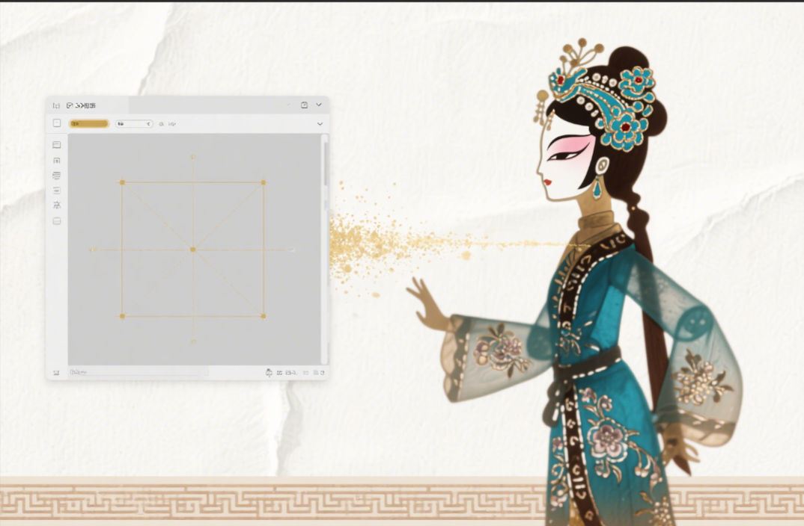

传承千年光影艺术，弘扬传统文化精髓

通过Unity技术，亲身体验皮影戏的魅力，感受传统文化与现代科技的完美结合
我们利用Unity游戏引擎技术，开发了这款虚拟皮影戏体验平台。您可以在这里亲自操纵皮影角色，感受传统皮影戏的表演乐趣。
平台提供了多种经典皮影角色和场景，您可以轻触面板，了解皮影戏的历史知识。
这项技术不仅让皮影戏的体验更加直观和有趣，也为传统文化的数字化保护和传承提供了新的可能性。
点击下方按钮启动虚拟皮影戏体验
支持在线操作，可以漫游皮影戏展馆，体验传统皮影戏班的乐趣。
可以录制您的皮影戏表演，生成视频文件，方便分享到社交媒体，让更多人了解皮影戏艺术。
内置皮影戏相关UI知识，帮助用户逐步掌握皮影戏的表演技艺。